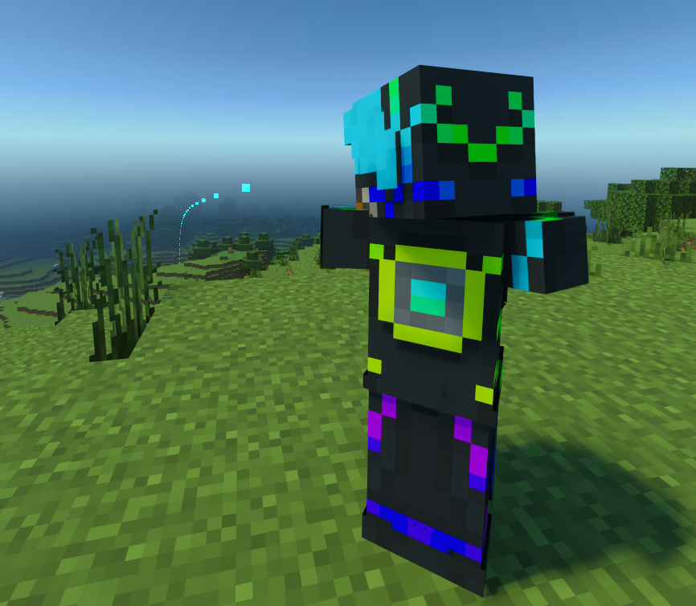
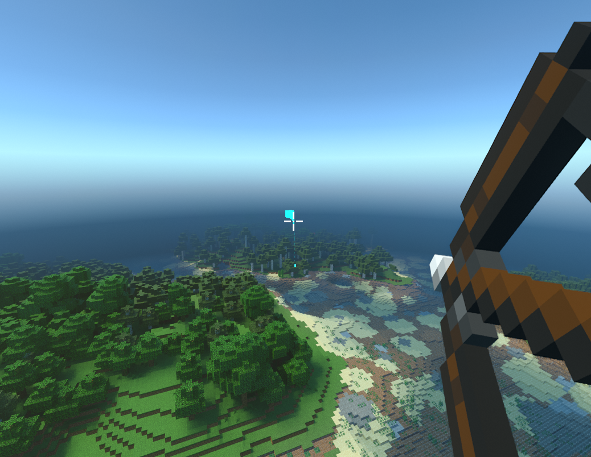

This mod shows the path that your arrow will take it you fire it from a fully-drawn bow. It's not perfect and it might not work on every server because they all change physics around a bit, and the only way to correct for that is to do it per server, by eye. So yeah, not ideal. But when it works, being able to fire an arrow super accurately at long distances it pretty cool.
 